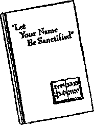

NOTE !
Unless otherwise indicated by the name of the Bible version, all Scripture texts found herein are quoted from the New World Translation of the Holy Scriptures, 1961 edition. For such Scripture quotations we give first the name of the Bible book, then the number of the chapter, and last the number of the verse.
The questions at the bottom of the pages are for readers to use in individual study of the paragraphs or in group study with their family or friends.
Copyright, 1962 by WATCH TOWER BIBLE & TRACT SOCIETY OF PENNSYLVANIA
Publishers
Watchtower Bible and Tract Society of New York, Inc. International Bible Students Association Brooklyn, New York, U.S.A.
Made in the United States of America
THIS is a time that calls for courage! This is a time to take courage! Why? Because God’s kingdom is at hand!
2 Nineteen centuries ago a message like this electrified the people who had the right expectations. Today countless numbers have not heard about God’s kingdom. Hundreds of millions of others have heard God’s kingdom mentioned but have not understood what this divine government means to mankind. So why should these take courage at the nearness of God’s kingdom? For that matter, why should any of us take courage at that fact? It is because of the relief and the blessings that God’s kingdom will bring, not after our day, but within our very own generation. With lasting relief at hand, why should not lovers of what is right take courage? All the courageous ones today want to help others to take courage.
3 We must all admit that here on earth this is a most disordered world. Mankind has never before known the like of it. But we look up and beyond into outer space, and there we see awe-inspiring order, regularity, balance and interdependence among the heavenly bodies, day and night. This
1, 2. (a) What quality is appropriate at this time? (b) Why should any of us take courage at the fact of the nearness of God's kingdom?
3. As we look at the earth and the heavens, what contrast do we note, but what do we not need to fear in this age of rockets?
beautiful, wonder-inspiring system in the heavens existed billions of years before modern nations rocketed men into outer space, with a threat of carrying man’s disorder into outer space. But we do not need to fear that, by means of rockets and satellites and spacemen, humans will be able to disarrange and disturb the visible universe. Rather, the lovely order and harmony of the heavens will be brought down here to earth and set upon a foundation that no evil-minded men can ever overthrow.
‘ Would you not like the orderliness and peaceful relationship of the visible heavenly bodies to be established on earth in our generation? Surely the great Producer, the great Creator, who hung all those countless heavenly bodies in outer space in such a beautiful arrangement and scientific order can bring order at his own chosen time to our earth, a mere tiny speck in a boundless universe. Listen to what he himself said and caused to be written, as translated from the ancient language that he spoke into modern speech:
5 “To whom then will you liken God, or what likeness compare with him? . . . Have you not known? Have you not heard? Has it not been told you from the beginning? Have you not understood from the foundations of the earth? It is he who sits above the circle of the earth, and its inhabitants are like grasshoppers; who stretches out the heavens like a curtain, and spreads them like a tent to dwell in; who brings princes to nought, and makes the rulers of the earth as nothing. ... To whom then will you compare me, that I should be
4,5. (a) As respects our earth, what question do we ask about the great Creator of those heavenly bodies? (b) Why can no one be compared to him? like him? says the Holy One. Lift up your eyes on high and see: who created these? He who brings out their host by number, calling them all by name; by the greatness of his might, and because he is strong in power not one is missing.... Have you not known? Have you not heard? The Lord is the everlasting God, the Creator of the ends of the earth. He does not faint or grow weary, his understanding is unsearchable.”—Isaiah 40:18-28, Revised Standard.
6 Also, an ancient king who observed the heavens wrote these poetic words, as translated into modern speech: “The heavens declare the glory of God; and the firmament showeth his handiwork. Day unto day uttereth speech, and night unto night showeth knowledge. There is no speech nor language; their voice is not heard. Their line is gone out through all the earth, and their words to the end of the world. In them hath he set a tabernacle for the sun, which is as a bridegroom coming out of his chamber, and rejoiceth as a strong man to run his course. His going forth is from the end of the heavens, and his circuit unto the ends of it; and there is nothing hid from the heat thereof. The law of Jehovah is perfect, restoring the soul: the testimony of Jehovah is sure, making wise the simple. The precepts of Jehovah are right, rejoicing the heart.”—Psalm 19:1-8, American Standard.
’Anyone’s thoughtful study of the heavens bears out the truth written long ago by an Oriental: “God is not a God of confusion, but of peace.” (1 Corinthians 14:33, AS) For order and peace to
6. What did a poetic ancient king write about the heavens and their Maker?
7. What truth do the heavens bear out about God, and what, therefore, will his kingdom mean to all mankind?
6 TAKE COURAGE—GOD’S KINGDOM IS AT HANOI take the place of selfish, deadly confusion here on earth it will require action by this God, whose law is perfect, whose testimony is pure, whose precepts are right, whose glory is seen in all the heavens though he himself is not seen by man of feeble eyesight. One thing, therefore, that God’s kingdom will mean to all mankind is universal peace and good order, the removal of wild confusion.
8 Just think of having God as king over all the earth! Being the Creator of earth and of man, he deserves to be king. We could have no one higher than he is as king. This does away with any human god ruling over us, like ancient Pharaoh of Egypt, who claimed to be God and before whom his subjects had to crawl on their belly in approaching him; or any human god like the deified Caesars of Rome, who used to be addressed as “Your Divinity”; or like the emperor of Japan, who on December 31, 1945, proclaimed the principle that the Japanese Tenno or Emperor was not a god descended from the sun goddess Amaterasu. Another thing: Having God as king does not mean an earthly theocracy with the Roman Catholic priesthood or the Greek Orthodox priesthood ruling on golden thrones and dictating to politicians, businessmen, judges and police and the people in general. It means no human theocracy by the Buddhist priesthood, or the Hindu priesthood, or the Moslem priesthood, or the Shintoist priesthood, or the Protestant religious clergy, to act as deputies for the heavenly King. We have had these religious authorities dominating the lives of the people for centuries, and what do we have for it today? Nothing but the present earthly mess!
8. What will having God the Creator as king mean as regards the religious rulerships over earth up till now?
8 God’s kingdom spells something vastly different for mankind’s benefit than having such religious authorities to run things, dictate things, control business and employment, playing favorites to the politically great and to the wealthy and regulating the lives of the masses of the people for them. It was in 607 B.C.E., or about 2,570 years ago, that Nebuchadnezzar king of Babylon became the world ruler. Since then particularly God permitted the nations to have their own preferred political rulers. He has let men have their way about kings and kingdoms, even if they wanted to do away with kings and set up peoples’ rule such as democracies or republics.
18 But the true believers in God’s kingdom have taken no part in those political movements. They have acted in harmony with the rule of action that God’s inspired writer laid down for the Christians in the Rome of the Caesars of nineteen centuries ago, saying: "Everyone must obey the authorities that are over him, for no authority can exist without the permission of God.” (Romans 13:1, An American Translation') The true Christians have obeyed this rule of action, because they have believed in God’s kingdom and have prayed and waited for it to take worldwide control of the earth, for the glory of God and the endless blessing of the people.
11 God has let the people and their rulers have their own way on earth long enough. After all the
9. As regards earthly rulerships, what has God permitted particularly since 607 B.C.E.?
io. How have believers in God’s kingdom acted toward such political movements, and why?
11. (a) After all the human rulership permitted by God, what do the people want today? (b) However, what is it God’s time for doing? experience that mankind have had till now, they should by now have had enough of human rule without the true God. But today, largely because of refusing to know anything better or because of having faith in nothing better, the people choose to be ruled by so-called Higher Powers or “superior authorities” of the human kind, including democracies or republics of the Western style or of the Eastern style. The people have had their opportunity; and God’s permitting them to have their own way or choice has let them come to the present world-state of affairs. Their having their own way has not benefited them, to judge by the results. Still they do not want God as king. But regardless of the desires of the people and their political, commercial and religious leaders, God’s time for permitting this way of running the earth is near its end. His time is at hand to set up the Kingdom.
12 Who dares to deny that God has the right at any time to set up his kingdom? The earth is his creation and belongs to him, and all of us are his creatures, dependent upon him for life and all other* good things. (Psalm 24:1) This God, who produced the orderly movement and arrangement of all the heavenly bodies above us, has the power and wisdom to set up a perfect, righteous kingdom over us who inhabit His earth. He has promised to do so at a definite time. His promise is written down in the Book that he inspired his faithful servants to write, the Sacred Bible. When his Son Jesus Christ was on earth as a man nineteen centuries ago, he taught the worshipers of God to
12. (a) Why has God the right to set up his kingdom over earth? (b) Why Is it to be expected that he will do so?
TAKE COURAGE—GOD’S KINGDOM IS AT HANDI 9 pray to God: “Our Father in the heavens, let your name be sanctified. Let your kingdom come. Let your will take place, as in heaven, also upon earth.” (Matthew 6:9, 10) That prayer, long prayed by the true followers of Jesus Christ, will get an answer from Almighty God, for it is in harmony with his own will.
13 By God’s permission during his time allowance for it we have had the so-called Higher Powers or “superior authorities” in political control of the earth till today. These have been established by God’s permission according to his arrangement of man’s affairs. Hence any religious group that tried to transform these worldly Higher Powers into God’s kingdom by Christ was bound to fail with such a religious counterfeit. The world conditions today prove that Christendom has failed. She is proved to be no instrument in God’s hands, no part of God’s kingdom.—Romans 13:1, 2.
14 When God displaces the present Higher Powers with his own kingdom over mankind, God will directly appoint and put in office the Ruling Authorities of his righteous new world. He will demonstrate the lesson that he taught King Nebuchadnezzar of Babylon twenty-five centuries ago. The lesson is this, that “the Most High is Ruler in the kingdom of mankind and that to the one whom he wants to, he gives it and he sets up over it even the lowliest one of mankind.” (Daniel 4:17,25,32) That one is his heavenly Son, who became the low-
13. Why was any religious group trying to transform the political powers into God’s kingdom bound to fail, and who has actually failed in it?
14, is. (a) According to what lesson taught in Nebuchadnezzar’s day will the ruling authorities be put in office in God’s new world? (b) Who, therefore, will be put in worldwide rulership?
ly man Jesus Christ; and this one will share the kingdom with his congregation of faithful lowly followers whom he will exalt from earth to heaven. In our time God will bring to reality the vision that his prophet Daniel had in ancient Babylon:
1S “See there! with the clouds of the heavens someone like a son of man happened to be coming; and to the Ancient of Days he gained access, and they brought him up close even before that One [Jehovah God]. And to him there were given rulership and dignity and kingdom, that the peoples, national groups and languages should all serve even him. His rulership is an indefinitely lasting rulership that will not pass away, and his kingdom one that will not be brought to ruin.”—Daniel 7:13, 14.
WHAT IT WII.I. SIGNIFY TO US
16 Oh what that will mean for all peoples and national groups of every language! Today famine afflicts large parts of the earth, and as a regular thing half the world’s population does not get enough to eat but is undernourished. When Jesus Christ, who called himself “the Son of man,” was here on earth, he refused to do a miracle to turn stones into bread so as to satisfy his hunger. But one day, after teaching the people, he fed the crowd of more than five thousand, and on another day his audience of more than four thousand, by miraculously multiplying a few bread loaves and fishes. Because Jesus Christ had this power to feed the people miraculously, many of them wanted to take him and make him their earthly king. But he
16. What did Jesus Christ, when on earth, demonstrate will be true as to feeding mankind under God’s kingdom?
TAKE COURAGE—GOD'S KINGDOM IS AT HAND! H refused to let this happen. (Matthew 4:1-4; 15: 29-38; John 6:1-15) But when he lets God make him king over all mankind and when he takes the place of the present Higher Powers over the people, he will see to it that all those who become his obedient subjects on earth get well fed. Never will there be a famine.
17 As God’s appointed king over mankind Jesus Christ will live up to this prophecy concerning his reign, which reads: “He will deliver the poor one crying for help, also the afflicted one and whoever has no helper. He will feel sorry for the lowly one and the poor one, and the souls of the poor ones he will save. From oppression and from violence he will redeem their soul, and their blood will be precious in his eyes. There will come to be plenty of grain on the earth; on the top of the mountains there will be an overflow. His fruit will be as in [Mount] Lebanon, and those who are from the city will blossom like the vegetation of the earth.” (Psalm 72:12-14,16) The plentifulness of food will rival that of the days of wise, peaceful King Solomon, of whom the Bible says: “[The people of] Judah and Israel were many, like the grains of sand that are by the sea for multitude, eating and drinking and rejoicing. And Judah and Israel continued to dwell in security, everyone under his own vine and under his own fig tree, from [the city of] Dan to Beer-sheba, all the days of Solomon.” (1 Kings 4:20, 25) This is one remarkable way in which Jesus Christ will prove himself to be what he said, “something more than Solomon.”—Matthew 12:42.
17. (a) In this regard what will Jesus Christ do in living up to Psalm 72? (b) How will he thus prove himself to be "something more than Solomon”?
18 However, Jesus Christ put the spiritual food ahead of the material food when he said to our great enemy, Satan the Devil, these words from the Holy Bible: “Man must live, not on bread alone, but on every utterance coming forth through Jehovah’s mouth.” (Matthew 4:4; Deuteronomy 8:3) In his kingdom he will take care of not only the material needs but especially the spiritual needs of all his faithful subjects. He will feed them spiritual food, just as he did when he was here on earth. He will give them the pure truth about Jehovah God and the correct way to worship and serve him by doing his perfect will. This will feed them and strengthen them to gain everlasting life in God’s new world; and never will they be corrupted by material abundance so as to make their bellies their god. By sheer love and appreciation of the great heavenly Provider of all this they will be impelled to worship and adore him.
19 Such an effect of God’s goodness upon men is foretold in Isaiah’s prophecy in these words: “And Jehovah of armies will certainly make for all the peoples, in this mountain, a banquet of well-oiled dishes, a banquet of wine kept on the dregs, of well-oiled dishes filled with marrow, of wine kept on the dregs, filtered. And in this mountain he will certainly swallow up the face of the envelopment that is enveloping over all the peoples, and the woven work that is interwoven upon all the nations. He will actually swallow up death forever, and the Lord Jehovah will certainly wipe the tears from all faces. And the reproach of his people he
18. Even in his own case what food did Jesus Christ put ahead of the material kind, and how will he show this in his kingdom?
19. How does Isaiah, chapter 25, foretell such an effect of -God’s goodness upon mankind under his kingdom? will take away from all the earth, for Jehovah himself has spoken it. And in that day one will certainly say: 'Look! This is our God. We have hoped in him, and he will save us. This is Jehovah. We have hoped in him. Let us be joyful and rejoice in the salvation by him.”’ (Isaiah 25:6-9) Because of the proper spiritual food for heart and mind the faithful subjects of God’s kingdom will not make materialism their god.
A PARADISE OF HEALTH
20 The providing of plenty of food to feed a world population far exceeding that of today will have to be attended by changes in earth’s climate and the condition of the soil and also by insect control. Lack of rainfall on large stretches of the earth, for season after season, afflicts millions of people with famine. The system of distributing what available food supplies there are is unable to meet the needs of the situation. Many are dying for want of food and drink. Countless millions are weak and haggard from not enough food; and the spirit of rebellion against the earthly Higher Powers is rising and spreading. This stands out in grim contrast to the ideal conditions of climate and soil and irrigation that are bound to exist under God’s kingdom. In sharp contrast to the gods of the nations to whom the people pray or look for rain to quench the parched earth, Jehovah God is the great Rainmaker. Even his prophets of ancient time knew that; and his prophet Jeremiah turned to him and said: “Do there exist among the vain idols of the nations any that can pour down rain,
20. (a) What will this providing of plenty of food have to be attended by? (b) How will Jehovah stand out in contrast to the gods to whom the nations pray? or can even the heavens themselves give copious showers? Are you not the One, O Jehovah our God? And we hope in you, for you yourself have done all these things.” (Jeremiah 14:22) History proves that he has done them.
21 It is well-known history that Jehovah God miraculously opened up sources of water when he led his chosen people by the hand of Moses through the wilderness to the “land flowing with milk and honey.” He himself uses those historic events as examples of what he will do for the people through his kingdom. Here is a prophetic promise of his: “The afflicted ones and the poor ones are seeking for water, but there is none. Because of thirst their very tongue has become dry. I myself, Jehovah, shall answer them. I, the God of Israel, shall not leave them. Upon bare hills I shall open up rivers, and in the midst of the valley plains, springs. I shall make the wilderness into a reedy pool of water, and the waterless land into sources of water. In the wilderness I shall set the cedar tree, the acacia and the myrtle and the oil tree. In the desert plain I shall place the juniper tree, the ash and the cypress at the same time; in order that people may see and know and pay heed and have insight at the same time, that the very hand of Jehovah has done this, and the Holy One of Israel has himself created it.”—Isaiah 41:17-20.
22 Under such irrigating of the arid parts of the earth and the proper distribution of the water sup-
21. What did Jehovah do about water supplies for Israel in the wilderness, and according to Isaiah 41:17-20 what does he promise to do?
22, 23. (a) With such water provisions, what will happen to this earth, and how aid Jesus confirm this before he died? (b) How will this compare with the Paradise in which Adam and Eve once lived?
TAKE COURAGE—GOD'S KINGDOM IS AT HAND! 15 plies, what will happen to this earth? By these provisions of God and by his blessing on the work performed by the subjects of his kingdom the whole earth will become a paradise, a lovely park for obedient mankind’s eternal home. Nowhere will the condition of this earth be a reproach to God’s kingdom that governs it, but everywhere it will be a glory to God its Creator. Even Jesus Christ, when he was dying sacrificially on a stake outside the walls of Jerusalem, looked forward to the restoring of paradise to this earth after God would raise him from the dead and install him in the Kingdom. When a sympathetic man dying alongside Jesus said to him: “Jesus! remember me whensoever thou shaft come into thy kingdom,” Jesus answered: “Verily I say unto thee this day: With me shaft thou be in Paradise.” (Luke 23:42, 43, Rotherham translation) For beauty, delightfulness and life-sustaining fruitfulness this Paradise will be the equal of that which the first man and woman lost because of sinning against God.
23 But it will not be only in the Middle East that this Paradise will be. The whole earth will be made a paradise, full of perfect people. This project that the first man and woman failed to carry out, God’s kingdom by Christ will gloriously accomplish.
LIFE AND RESURRECTION
24 When we think of it, it would be terrible to die and leave such a lovely place as that Paradise. Yes, it would be; but God’s kingdom will enable the obedient people to live in that Paradise forever, in peace with God and his King Jesus Christ and with one another and with all the animals, birds,
24. How long will living in that Paradise be possible, and how will the state of health be affected by living there?
and creatures in the waters. There will be no wars to kill off anybody. There will be complete and universal disarmament; and the credit for this will go, not to ungodly Communism or to the United Nations, but to God’s kingdom. (Micah 4:1-5) With a perfect government over them, and with a peaceful Paradise in which to live, with pure air to breathe and unpolluted water to drink and plenty of wholesome foods to eat, the health of the people should improve and become perfect.
25 However, their King Jesus Christ once died for them, laying down his perfect humanity in sacrificial death for them. This fact will enable him to lift the condemnation of death under which all men were born because of the sin of our first parents. (Romans 5:12-14) Thus God’s kingdom by Christ will be in position to lift faithful, obedient mankind up to the human perfection that their first parents, Adam and Eve, had when God created them and put them in file Paradise of Eden. Death-dealing sickness will be wiped out, just as certainly as Jesus Christ, when he was on earth, healed the sick, made the blind see, the deaf hear, the dumb speak, the lame walk, and cleansed the lepers and raised the dead to life, one man having been dead for four days. This will result from having God as King ruling by his Christ. Isaiah’s prophecy (33:22, 24) associates rulership and health together, saying: “Jehovah is our Judge, Jehovah is our Statute-giver, Jehovah is our King; he himself will save us. And no resident will say: T am sick.’ The people that are dwelling in the land will be those pardoned for their error.”
25. (a) Because of his sacrificial death, what will the King Jesus Christ be enabled to do for mankind? (b) How does Isaiah 33:22, 24 associate rulership and health together?
ze Very fine for those living, you say, but what about the billions of dead people? What about the faithful prophets of God who died thousands of years ago, like Abraham, Isaac and Jacob and Moses? We are glad to answer that there is bright hope for the dead. We are not like the religious sect of the Jewish Sadducees who held out no hope for the dead people, not believing that the dead would be raised to life again under God’s kingdom. To those disbelievers in a resurrection, Jesus Christ said regarding those raised to life again: “They are God’s children by being children of the resurrection. But that the dead are raised up even Moses disclosed, in the account about the thornbush, when he calls Jehovah The God of Abraham and God of Isaac and God of Jacob.’ He is a God, not of the dead, but of the living, for they are all living to him.”—Luke 20:36-38.
27 Looking ahead, God saw Abraham, Isaac, Jacob and the rest of the dead all living again under his kingdom by Christ. Although Abraham, Isaac and Jacob were dead by the time that their descendant Moses lived, God was so certain of carrying out his purpose to raise the dead that he spoke of being, not a past God, but the future God of Abraham, Isaac and Jacob, as if they were then alive.
2S To give us a proof or guarantee that he would raise the dead under his kingdom, God raised from the dead the very one whom he makes king of all the earth, namely, Jesus Christ his Son. The Chris-
26, 27. (a) Why will not those things be fine for only the people living then? (b) What kind of God was he to be to Abraham, Isaac and Jacob, according to what he said to Moses at the thornbush?
28. What resurrection did God accomplish as a guarantee that he would raise the dead under his kingdom? tian apostle Paul, who miraculously saw and talked with Jesus Christ after he was raised from the dead, says the following: “Now Christ has been raised up from the dead, the first fruits of those who have fallen asleep in death. For since death is through a man [Adam, the husband of Eve], resurrection of the dead is also through a man [the sacrificed Jesus Christ].” This same witness to the resurrection of Jesus Christ said also to the highest court of judges in ancient Greece: God “has set a day in which he purposes to judge the inhabited earth in righteousness by a man whom he has appointed, and he has furnished a guarantee to all men in that he has resurrected him from the dead.”—1 Corinthians 15:20, 21; Acts 17:31.
29 Our human dead are not alive somewhere in an unseen spirit world. Their souls have not transmigrated from their personal human bodies into the bodies of animals, birds, insects, fishes, or some other human person. God’s Word says that they are dead souls, sleeping in death and waiting for a resurrection under God’s kingdom, even though they never heard of God’s kingdom when alive. The many billions of them are not too many for God to remember, inasmuch as the countless billions of stars are many times more than all our dead, and yet God knows and names all those stars.
30 God has a perfect record of all the dead and can reproduce them here on this earth. God’s record has not faded because the people have been dead so long. His resurrection of them by Christ will be a re-creation of them with their same personality and mental growth. So the resurrection 29,30. (a) Are the human dead in a spirit world or transmigrated? (b) Why will their resurrection not be a transmigration of the soul, and how long will they have the opportunity to live?
TAKE COURAGE—GOD'S KINGDOM IS AT HANDI 19 will not be a transmigration of the dead into the bodies of new people born for the first time under God’s kingdom. The people of this generation who live on into the Kingdom time will know their dead friends and loved ones when these are resurrected. Abraham, Isaac and Jacob will know one another in the resurrection. That will be true of all others, including that friendly man who Jesus said would be in Paradise when Jesus comes into his kingdom. All these resurrected ones will have the grand opportunity of gaining eternal life under God’s kingdom by doing God’s will and obeying his King, Jesus Christ. They will enjoy living in Paradise, under the moon, not wanting to go to the moon.
AT HAND!
31 Truly God’s kingdom will mean all that mankind could desire. Naturally the wish of all humans who cultivate faith in that kingdom is that it may come in our day! To all such we can Biblically say that God’s kingdom is at hand. That is why they should take courage, for they may live on to enter into its indescribable blessings and joys. But why are we so confident that God’s kingdom is that near at hand that this generation will live to experience its benign rule? Why is not the Kingdom thousands of years off, until Christendom has converted the world to Christianity? Well, if God’s kingdom had to wait until Christendom converted the world to Christianity, God’s kingdom would never come.
32 To illustrate: The World Almanac for 1955
31,32. (a) Because of the desirableness of God’s kingdom, what is naturally our wish, and as to this what may now be said? (b) What would happen if the coming of God’s kingdom depended upon Christendom, and what arithmetical proof shows that?
gave the world population as 2,400,000,000 at that time, of which 787,016,933 claimed to be Christians. Seven years later, The World Almanac for 1962 gave the world population as 2,971,800,000, of which 888,803,026 claimed to be members of Christendom. That means 101,786,093 more “Christians” in seven years’ time. But what about the world population? It became 571,800,000 greater in those seven years’ time. In other words, the world population had increased 5.61 times as fast as the number of so-called Christians. In 1955 there were 1,612,903,067 non-Christians, but in 1962 there were 2,082,996,974 non-Christians. So instead of the gap between the number of nonChristians and the number of “Christians” getting narrower, it gets tremendously wider every year. That is only as it should be, since the Bible does not prophesy that Christendom will ever convert the world to Christianity and thus establish God’s kingdom. Rather, the Bible prophesies the falling away from the true Christian faith. Christendom herself is an evidence or expression of this falling away from Christianity. That is why Christendom has no peace and unity today.—2 Thessalonians 2:1-12.
33 To depend upon Christendom to convert the world and bring God’s kingdom would lead to loss of courage. So we must look to God’s Word, the Bible, for the spirit of courage. God’s Word is the Book that puts meaning into human history, the true meaning. It gives the true interpretation of the events of history since the year 1914. We have lived through a fear-inspiring time since 1914, and 33,34. (a) So to what information must we look for the spirit of courage, and why? (b) Since 1914, what have we lived through, for which we want to know the meaning?
TAKE COURAGE—GOD’S KINGDOM IS AT HAND! 21 the end of it is not yet. What does it mean? Since 1914 we have gone through two world wars, the second being worse than the first. We have seen atomic power introduced into modem warfare, under the shield of the most powerful nation of Christendom. We are not yet done with the pestilences, the famines and the earthquakes that have cut deeply into the world population. We have seen an increase in lawlessness, with violence that must be worse than that which prevailed in Noah’s days before the flood in which the whole old world was destroyed.—Genesis 6:11-13; 2 Peter 3:6.
34 To this we must add the moral breakdown everywhere, the increase of social diseases, the breakup of empires, a world population explosion with inadequate food distribution, missile weaponry with nuclear warheads, the blasting off of which would be followed by a fire storm that would bum up a far greater area than that of Sodom and Gomorrah and the other cities of the Jordan plain.
35 And now the latest thing proposed is an “asteroid bomb,” which would be a rocket powerful enough to propel a small planet out of its orbit around the sun and send it crashing into a target area here on earth. In describing it, a scientist said: “A single asteroid bomb striking Kentucky would knock out the entire eastern half of the United States,” this to be followed by earthquake shocks that “would topple buildings all over the North American continent.” The scientist said that the Soviet Union should have such a rocket by or before 1970. Is this not indeed a time for fear? —New York Times as of January 19, 1962.
35. What is the latest weapon that is proposed for warfare, with far-reaching effects?
36 A time for fear? No! says a man who conquered the world. That man was Jesus Christ, the King appointed for God’s promised kingdom. On the Jewish passover night of 33, just some hours before he was put to death on a stake for preaching God’s kingdom, Jesus said to his loyal apostles: “I have said these things to you that by means of me you may have peace. In the world you will have tribulation, but take courage! I have conquered the world.”—John 16:33.
37 Today, for anyone to yield to the spirit of fear means to go the way of the world. But to take courage means to obey what Jesus Christ tells us to do and to find peace and fearlessness by means of him. Nineteen centuries ago when he stood within a few hours of being nailed to a stake to die, he was able to tell his followers to take courage despite the tribulations that they would have in the world, tribulations no greater than the tribulation through which he was then passing. Back there he, their Leader, had conquered the world because he did not let the world crack his loyalty to God’s kingdom by bringing tribulation upon him.
38 Today Jesus Christ has all the more reason to tell us to take courage. Why? Because now he has come into his kingdom as God’s anointed, installed King for the new world. There remains no room for doubt about this. The very things that we have experienced in this world since the year 1914 are a proof that he has come into his kingdom. We 36. What words of Jesus show whether this should be a time for fear on the part of his followers?
37. Yielding to fear today or taking courage would be the following of what course?
38. Why has Jesus all the more reason today to tell us to take courage, and how can we know that this reason is sure?
can know this, because he foretold that these world events and conditions would be visible, tangible proof that he had been installed in the heavenly throne in 1914. That was the year when World War I broke out and all this trouble began to come.
39 Jesus Christ the King foretold these things in great detail, taking up four chapters of the Bible, in answer to the question of four of his apostles: “Tell us, When will these things be, and what will be the sign of your presence and of the conclusion of the system of things?” (Matthew, chapters 24, 25; Mark, chapter 13; Luke, chapter 21) Jesus provided the true meaning, the true interpretation, for the events of our generation since 1914. His interpretation is that he became present in his promised heavenly kingdom in 1914, the year when this worldly system of things entered into its time of the end. Furthermore, the very tribulations that his true followers of this generation have undergone since 1914 are part of the “sign” or visible proof that the Kingdom is at hand and that this system of things faces its complete end. In giving his prophecy Jesus said to his apostles, in Matthew 24:9-13:
40 “Then people will deliver you up to tribulation and will kill you, and you will be objects of hatred by all the nations on account of my name. Then, also, many will be stumbled and will betray one another and will hate one another. And many false prophets will arise and mislead many; and because of the increasing of lawlessness the love of the
39,40. (a) How did Jesus provide the true interpretation for the events of our generation since 1914? (b) According to things he said, of what are the tribulations upon nis followers a proof?
24 TAKE COURAGE—GOD’S KINGDOM IS AT HAND! greater number will cool off. But he that has endured to the end is the one that will be saved.”
41A remnant of these faithful anointed followers are here on earth with us to this day, despite all that tribulation since 1914. This is because they have conquered the world, like their Leader Jesus Christ. But their final victory is not yet. They must yet complete their conquest of this world. To do this, they must continue enduring tribulation to the end of this world or system of things. So the triumphant words of Jesus Christ must keep ringing in their ears: “Take courage!” They must keep the attitude that he told them to adopt in his prophecy that predicted the evidences marking the end of this worldly system of things. After he had foretold the world situation that would develop from 1914 onward, he said to them: “Men become faint out of fear and expectation of the things coming upon the inhabited earth; for the powers of the heavens will be shaken. And then they will see the Son of man coming in a cloud with power and great glory. But as these things start to occur, raise yourselves erect and lift your heads up, because your deliverance is getting near.” Would that not be reason enough for them to take courage?—Luke 21:26-28.
42 Deliverance is now near for the faithful remnant of these heirs of God’s heavenly kingdom. Happily this means that deliverance is near also
41. (a) How is it that there is still a remnant of faithful anointed followers yet on earth? (b) According to Jesus, what attitude must they adopt because of the things occurring?
4i. (a) The fact that deliverance is near for these means also what else? (b) What appropriate thing in Christ's Sermon on the Mount do they now believe in?
for persons of all nations, races, colors and languages who now interest themselves in God’s kingdom by Christ and who give it the first place in their lives. These persons believe in Christ’s famous Sermon on the Mount. They believe in aU of it, not just in the so-called Golden Rule found in it, namely: “All things, therefore, that you want men to do to you, you also must likewise do to them.” They believe also in these words of that Sermon: “So never be anxious and say, ‘What are we to eat?’ or, ‘What are we to drink?’ or, ‘What are we to put on?’ For all these are the things the nations are eagerly pursuing. For your heavenly Father knows you need all these things. Keep on, then, seeking first the kingdom and his righteousness, and all these other things will be added to you.” —Matthew 7:12; 6:31-33.
43 It takes courage to follow these words of the Sermon on the Mount. To have such courage we must have faith in God the heavenly Father. Yet we have reason to have faith that God’s established kingdom is at hand and that this kingdom is backing us up. Even in these days of the United Nations with a membership of over a hundred nations, God’s kingdom is the most popular thing in all creation visible and invisible. But how is this so, when there is such international opposition to it and when preachers of it are hated and persecuted? It is because all the holy angels of God’s heavens are in favor of his kingdom by Christ. These angels are on our side if we are in favor of the same thing as they are.
43. (a) To have courage to follow those words, what must we have? (b) Why is God’s kingdom the most popular thing in all creation?
“ Those angels, whose numbers are innumerable to us, are the finest army in all creation. They have never lost a battle, to bring any disappointment to their God or any reproach of defeat upon his glorious name. Already, according to Bible prophecy that describes the order of events in the unseen spiritual heavens, they have fought for God’s kingdom, after it was installed in 1914. As a result the chief Kingdom opposer, Satan the Devil, and his demons have been cast out of the holy heavens down to our earth to await here their Armageddon of defeat. And in that universal war of Armageddon God’s angels will fight the climactic battle for God’s kingdom, under the leadership of his King Jesus Christ. This world, that is to say, this system of things, will go down into destruction. God’s kingdom will come forth victorious, to reign forever for mankind’s blessing.—Revelation 12:1-12; 19:11-21.
HOW TO TAKE COURAGE
45 Armageddon’s destruction of this worldwide system of things will bring the greatest time of trouble that men have ever experienced since the global flood of Noah’s day. That is what Jesus’ prophecy says. (Matthew 24:21, 22, 37-39) The very foundation of this troubled system of things will be moved from under it and plunged, as it were, into the dark depths of the oceans. It will be as if the very ground were being moved from beneath men. But God’s kingdom will never be 44. (a) What may be said regarding those angels as an army? (b) When will they fight the climactic battle, and with what outcome?
45,46. (a) What will Armageddon be in mankind’s experience? (b) What will not then be moved, and so whose expressed confidence can we have during the distresses of the world? moved or removed; and as long as we seek it first and anchor our hope in it, we can have the confidence that we find expressed in prophetic Psalm 46, verses 1 through 7:
46 “God is for us a refuge and strength, a help that is readily to be found during distresses. That is why we shall not fear, though the earth undergo change and though the mountains totter into the heart of the vast sea; though its waters be boisterous, foam over, though the mountains rock at its uproar. There is a river the streams of which make the city of God rejoice, the holiest grand tabernacle of the Most High. God is in the midst of the city; it will not be made to totter. God will help it at the appearance of the morning. The nations became boisterous, the kingdoms tottered; he sounded with his voice, the earth proceeded to melt. Jehovah of armies is with us; the God of Jacob is a secure height for us.”
4T Those who have this true godly courage today will keep in alignment with Jehovah of armies, the God of Abraham, Isaac and Jacob. They will pray for his kingdom to come with destruction upon this worldly system of things, just as Jesus Christ taught us to pray in his Sermon on the Mount: “Our Father in the heavens, let your name be sanctified. Let your kingdom come. Let your will take place, as in heaven, also upon earth.” (Matthew 6:9,10) They will not run ahead of that coming of God’s kingdom and secretly set up a rebel government in exile and use violence to force people onto the side of God’s kingdom. They will
47. (a) Where will those having such godly courage align themselves, and with what prayer? (b) What apostolic instructions regarding the political powers will they follow, and how ? peacefully follow the apostle’s instructions in Romans 13:1, 5: “Let every soul be in subjection to the superior authorities, for there is no authority except by God; the existing authorities stand placed in their relative positions by God. There is therefore compelling reason for you people to be in subjection, not only on account of that wrath [expressed by these superior authorities] but also on account of your conscience.” True Christians know that they can never overthrow this worldly system of things. They know that God’s time is at hand to do it.
48 It is easy to say to people, “Take courage!” but how can they take courage when the movement of world affairs today is so frightening? The only way to do so is by studying God’s Word, the Holy Bible. It tells us convincingly who God is and what his kingdom means to us. Today disbelief in the God of the Bible is general, even in Christendom. Hence even to profess faith in this God calls for courage in the midst of a scoffing world. Furthermore, to believe that this God will set up his kingdom, not by means of world conversion through Christendom, but by direct action on God’s part with a world calamity, requires still more courage.
49 But how can we seek this God who is a shelter for us unless we learn about him? How can we seek first his kingdom if we keep in ignorance of it and its vital importance to us? So it is absolutely necessary for us to get a Bible and study it and learn its heartening promises and believe them.
48. How can we take courage, and why is it necessary even in Christendom?
49. What do we have to do about the Bible and what it promises?
We need to pray to this God who has made all these precious promises, assuring us that this world will be removed and God’s kingdom will be established and will bring in a righteous new world, along with the resurrection of the dead and the cultivating of a paradise earth-wide.
50 Therefore familiarize yourself with the Book of the Kingdom, the Bible. Learn to know its King, Jehovah God, and his Christ, Jesus, who loved mankind and died sacrificially for them. Learn why the Kingdom and its triumph in our generation are a certainty. Learn why it is the inevitable government for all our earth and for all peoples. Then share this lifesaving knowledge with others. Display your courage of conviction by taking part in the fulfillment of a glorious prophecy that applies during the “time of the end” of this system of things. Which prophecy? The one that Jesus said would come true as part of the evidence that he is present in his kingdom and that this world is in its “time of the end.” This is the prophecy: “This good news of the kingdom will be preached in all the inhabited earth for a witness to all the nations; and then the end will come.”—Matthew 24:14; Daniel 12:4.
51 You will not have to do this Kingdom preaching alone. You have all the active witnesses of Jehovah in 188 lands around the earth with whom to do this preaching, in more than 150 languages. They have made “Jehovah of armies” their refuge, their strength and their ready help. To take course. Through the Bible what must we learn, and how must we display our courage of conviction?
51. (a) Why is it not necessary to do this preaching alone? (b) Why is meeting with them necessary, and in obedience to what counsel from the book of Hebrews? age these days you need to meet with these Kingdom witnesses of Jehovah, in order to imbibe their courage as they study God’s Word with you. In this regard follow the Bible’s timely word of counsel: “Let us consider one another to incite to love and fine works, not forsaking the gathering of ourselves together, . . . but encouraging one another, and all the more so as you behold the day drawing near.”—Hebrews 10:24, 25.
52 All the evidences are that the “day” is drawing near! Take all positive steps, then, to build up your courage, Christian courage. Only the people having the courage like that of Christ are going to pass through the world-consuming Armageddon that is ahead. The worldly cowards will not pass through that universal war, for the cowards are not on God’s side today nor on the side of his Son, the King Jesus Christ. The Bible is positive in saying that God’s new world of righteousness is not for cowards. (Revelation 21:8) At the decisive war of Armageddon between the forces representing the two worlds the courageous will hold true to God’s kingdom and will never stop preaching it until it has gained a magnificent victory over Satan’s old world and brought in the new world of righteousness. These courageous ones will have God’s protection and will pass through the warfare into the promised new world under God’s triumphant kingdom by Christ. There is every valid reason now for us to heed the exhortation that comes forth from the Bible, Take courage! For God’s kingdom is at hand!
52. (a) In view of the new world ahead, why is it necessary to build up Christian courage now? (b) What will be the experience of the courageous during the war of Armageddon?
CHIEF OFFICE AND OFFICIAL ADDRESS OF
Watch Tower Bible & Tract Society of Pennsylvania Watchtower Bible and Tract Society of New York, Inc. international Bible Students Association
124 Columbia Heights, Brooklyn 1, New York, U.S.A.
ADDRESSES OF BRANCH OFFICES:
ALASKA: 1438 Medfra Street, Anchorage. ARGENTINA: Calle Honduras 5646-48. Buenos Aires 14. AUSTRALIA: 11 Beresford Road, StrathHeld, N.S.W. AUSTRIA: Gallgasse 44, Vienna XHI. BAHAMAS: Box 1247, Nassau, N.P. BELGIUM: 28 Ave. Gen. Eisenhower, Schaerbeek-Brussels. BERLIN, WESTERN GERMANY: 49-50 Bayernallee, Charlottenburg 9. SB* LIVIA: Casilla No. 1440, La Paz. BRAZIL: Rua Licinio Cardoso 330, Rio de Janeiro, GB. BRITISH GUIANA: So Brickdam. Georgetown 11. BRITISH HONDURAS: Box 257, Belize. BURMA: P.O. Box 62, Rangoon. CAMEROON: B.P. 26, Douala-Deido. CANADA: 150 Bridgeland Ave., Toronto 19, Ontario. CEYLON: 11 Sakvithi Lane, Colombo 5. CHILE: Correo 15, Casilla 261-V. Santiago. COLOMBIA: Apartado Agree 2587, Barranquilla. CONGO. REPUBLIC OF THE: B.P. 7409, Leopoldville. CONGO REPUBLIC: B.P. 2.114, Brazzaville. COSTA BICA: Apartado 2043, San JosA CUBA: Avenida 15 Num. 4608. Almendares. Marianao, Havana. CYPRUS: P.O. Box 288. Limassol. DENMARK: Kongevejen 207, Virum Copenhagen. DOMINICAN REPUBLIC: Salcedo 88, Apt. 4, Santo Domingo. ECUADOR: Casilla 4512, Guayaquil EIRE: 86 Lindsay Rd., Glasnevin, Dublin. EL SALVADOR: Apartado 401, San Salvador. ENGLAND: Watch Tower House. The Ridgeway, London N,W, 7. Fill: Box 23, Suva. FINLAND: Tikkurila. FRANCE: 81, rue du Point-du-Jour, Boulogne-Billancourt (Seine). GERMANY (WESTERN): Am Koblheck, Postfach 13 025. (62) Wiesbaden-Dotzheim. GHANA, WEST AFRICA: Box 760, Accra. GREECE: No. 4 Kartali St., Athens 6. GUADELOUPE: B.P. 239, Pointe-A-Pitre. GUATEMALA: 11 Avenida 5-67, Guatemala 1. HAITI: Post Box 185, Port-au-Prince. HAWAII: 1228 Pensacola St., Honolulu 14. HONDURAS: Apartado 147, Tegucigalpa. HONG KONG: 312 Prince Edward Rd., Second Floor, Kowloon. ICELAND: P.O, Box 251, Reykjavik. INDIA: South Avenue. Santa Cruz, Bombay 54. INDONESIA: Postbox 2105. Djakarta. ISRAEL: 31 Uno Ave., Haifa. ITALY: Via Monte Maloia 32 (Monte Sacro), Rome. JAMAICA. W.I.: 41 Trafalgar Rd., Kingston 10. JAPAN: 1 Toyooka-Cho, Shiba-Mita, Minato-Ku, Tokyo. KOREA: P.O. Box 7, Sodaemun-ku P.O., Seoul. LEBANON: P.O. Box 1122. Beirut. LEEWARD ISLANDS, W.I.: Box 119, St. John’s, Antigua. LIBERIA: P.O. Box 171, Monrovia. LUXEMBOURG: rue Antoine Meyer 14, G.D. Luxembourg. MAURITIUS: 12 rue Rev. Lebrun, Rose Hill. MEXICO: Calzada Melchor Ocampo 71, Mexico 4, D.F. MOROCCO: H. G. De Wandel. B.P. 1028 Principal, Tangier. NETHERLANDS: Koningslaan 1, Amsterdam-Z. NETHERLANDS ANTILLES: Pietermaaiweg 152, Willemstad, Curacao. NEWFOUNDLAND, CANADA: 239 Pennywell Rd., St. John’s. HEW ZEALAND: 621 New North Rd., Auckland S.W- 1. NICARAGUA-. Apartado 183, Managua, D.N. NIGERIA, WEST AFRICA: P.O. Box 194. Yaba, Lagos. NORTHERN RHODESIA: Box 1598, Kltwe. NORWAY: Inkognitogaten 28 B„ Oslo. H YAS Al ANO: Box 83, Blantyre. PAKISTAN: 8-E Hablbullah Rd., Lahore. PANAMA: Apartado 1386, Panama. PAPUA: Box 113, Port Moresby. PARAGUAY: Ayolas 298, Asuncion. PERU: Casilla No. 5178, Miraflores, Lima. PHILIPPINE REPUBLIC: 186 Roosevelt Ave., San Francisco del Monte, Quezon City. PUERTO RICO: 704 Calle Lafayette, Pda. 21, Urb. Hip., Santurce 34. SIERRA LEONE: Box 136, Freetown. SINGAPORE 15: 33 Poole Road. SOUTH AFRICA: Private Bag, P.O. Elandsfontein, Transvaal. SOUTHERN RHODESIA: P.O. Box 1462, Salisbury. SURINAM: Box 49, Weidestraat 82 B, Paramaribo. SWEDEN: Jakobsberg; SWITZERLAND: Allmendstrasse 39, Berne 22. TAIWAN (CHINA): No. 5, Lane 99, Yun-Ho St, Taipei. THAILAND: Box 67, Bangkok. TRINIDAD, W.I.: 21 Taylor St., Woodbrook. Port of Spain. UNITED STATES OF AMERICA: 117 Adams St., Brooklyn 1, N.Y. URUGUAY: Francisca Bauza 3372, Montevideo. VENEZUELA: Avda. Honduras, Quinta Luz, Urb. Las Acacias, Caracas, D.F.
What is God’s name?
Why must it be sanctified?
What will that mean to you?
Millions have prayed: “Our Father in the heavens, let your name be sanctified."
The answer to that prayer will bring the blessings of everlasting life in a righteous new world to God-fearing persons out of all nations. For you to benefit, it is important to know whot God is doing to sanctify his own name and how you can have a share in sanctifying that name now. Read the book:
“LET YOUR NAME BE SANCTIFIED’’
Beautifully slothbound; 384 pages; 50e, postpaid. Send for your copy today. Orders may be sent Io the addresses shown on page 31.